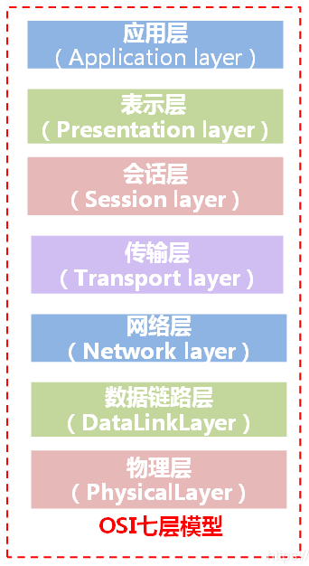
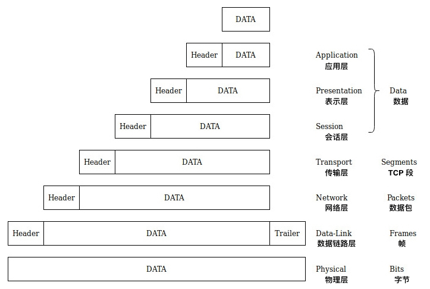
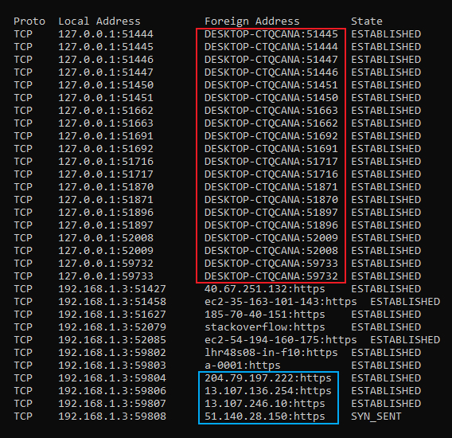
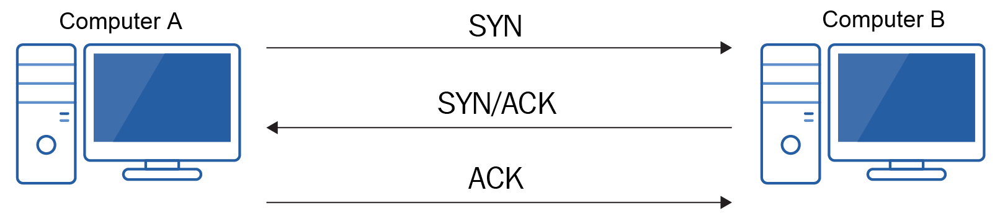
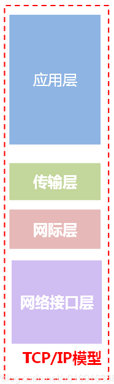

了解网络模型的目的
在网络初期，大多数系统都使用专有软件和协议，这些软件和协议仅允许与同一制造商或可以访问这些协议的制造商的其他设备进行通信。 当时，这已不是什么大问题，因为组织会一直从同一制造商那里购买设备，并且没有在组织外部进行通信的真正方法。 但是，随着时间的流逝，这种情况已经改变，现在需要与其他组织拥有的系统进行通信。
其他组织不太可能拥有同一制造商的设备，因此这些设备无法相互通信。 为了解决这个问题，有人要求创建一个标准模型，并公开提供给所有人使用。 成为标准的两个模型如下：
- 国际标准化组织（ISO）的开放系统互连（OSI）模型
- TCP / IP 模型
OSI 模型
OSI 模型是一个包括七个单独层的网络模型，如下图所示。 这些层中的每一层都与与其相邻的层以及接收设备上的等效层进行通信：

顶部三层（应用，表示和会话）称为上层。 底层的四层（传输，网络，数据链路，物理）称为低层。
数据通过发送设备上的 OSI 模型时，将经历一个称为封装的过程。 封装只是从上一层获取数据，向其添加标头（有时是尾部），然后将其传递到重复该过程的下一层。 头层（和尾部）和向下传递到下一层的数据被始发层称为协议数据单元； 在接收层上，它被称为服务数据单元。 下图显示了处理过程中的封装，并在右侧列出了数据单元名称。

第 7 层 应用层
需要提及的一点，应用程序不驻留在 OSI 模型的应用程序层上。 实际上，它们位于 OSI 模型之上。 应用层充当应用程序和网络模型之间的接口。 任何支持网络通信的应用程序都将使用网络应用程序编程接口（API）进行开发。 该 API 包含告诉应用程序如何与应用层通信的代码。
应用程序将支持许多应用层协议，而不是应用程序位于应用层。 其中一些常用协议包括以下内容：
-
简单邮件传输协议（SMTP）
-
邮局协议（POP）
-
Internet 邮件访问协议（IMAP）
-
超文本传输协议（HTTP）
-
域名系统（DNS）
-
安全外壳（SSH）
-
文本传输协议（FTP）
第 6 层 表示层
表示层从应用程序层获取传递给它的数据，并将其转换为通用格式或语法。一些正在转换的数据将非常复杂，必须将其转换为平面文件，以准备流式传输到接收者。 该序列化的数据流被接收方的设备接收并反序列化并重建为其原始格式。进行此转换的原因是不同系统或应用程序的本机格式可能会有所不同。 通过将数据转换为通用格式，任何接收到数据的设备都可以理解它，并且可以扩展为接收应用程序可以理解的格式。
除了转换数据之外，表示层还提供数据压缩和加密/解密。 该层上使用的一些通用标准包括：
- JPEG
- ASCII
- TIFF
- GIF
第 5 层 会话层
会话层负责管理设备之间的会话。 会话管理包括建立会话，同步设备之间的通信以及终止会话。
设备在这一层上使将要进行的通信类型达成一致，包括以下内容：
- 单工 Simplex
- 半双工 Half-duplex
- 全双工 Full-duplex
该层支持的协议包括以下内容：
- RPC
- SQL
- NetBIOS
- Point-to-Point Tunneling Protocol (PPTP)
第 4 层 传输层
传输层负责主机到主机的通信并在两个设备之间创建逻辑连接。 它包括启动设备之间的连接，设备之间的流控制，相同顺序的传递以及多重通信。
传输层上的两个主要协议如下：
- 传输控制协议 Transmission Control Protocol (TCP)
- 用户数据报协议 User Datagram Protocol (UDP)
这两个协议有一些共同点：
首先，两个协议都包含一个校验和。 此校验和是错误检测的一种方式。 当处理数据以进行发送时，发送设备将执行计算，该计算会基于正在发送的数据生成一个值。 接收设备执行相同的计算。 如果值匹配，则数据正确。
他们的另一个共同特点是能够进行多路通信。 这只是一台机器可以与另一台机器同时进行多个对话的一种复杂的说法。
另一个通用特性是使用逻辑端口号。
逻辑端口
在我们谈论交换机和路由器的端口时，我们讨论的是物理端口。
逻辑端口是软件中定义的端口。 逻辑端口的目的是允许接收设备识别数据要发送给哪个应用程序或服务。
TCP 和 UDP 标头均包含源端口号和目标端口号。当接收方设备接收到数据时，将检查目标端口号，然后设备会将数据传递给相关的应用程序或服务。
有 65,536 个逻辑端口号可用（编号为 0-65,535）。这些号码由**互联网号码分配局（IANA）**分配，并细分为多个范围：
- 知名端口（0 - 1,023）：这些是分配给常用网络服务的端口
- 注册端口（1,024 - 49,151）：这些端口号是应开发人员的要求由 IANA 分配给应用程序或服务的
- 动态或临时端口（49,152 - 65,535）：这些端口不是 IANA 分配的，通常由客户端计算机用作源端口
下表提供了一些常见端口及其端口号的详细信息：
| 端口号 | 服务/协议 |
|---|---|
| 21 | FTP |
| 22 | SSH |
| 23 | Telnet |
| 25 | SMTP |
| 53 | DNS |
| 67, 68 | 动态主机配置协议（DHCP） |
| 80 | HTTP |
| 88 | Kerberos |
| 110 | 邮局协议 v3（POP3） |
| 123 | 网络时间协议（NTP） |
| 137-139 | NetBIOS |
| 143 | IMAP |
| 161 | 简单网络管理协议（SNMP） |
| 389 | 轻型目录访问协议（LDAP） |
| 443 | 安全超文本传输协议（HTTPS） |
| 3389 | 远程桌面协议（RDP） |
活动 1：在此活动中，你将确定 PC 所打开的端口以及目标设备所连接的端口：
- 打开命令行
- 运行
netstat -a命令（-a 开关显示已连接的端口和侦听端口。由于 UDP 端口不建立连接，因此必须使用此开关查看它们。
你应该会收到与以下屏幕截图类似的输出：

“Local Address” 列详细说明了您的 IP 地址并指出了已打开的本地端口。
“Foreign Address”列详细说明了主机是通过名称还是 IP 地址连接的，并告诉我们目标设备上的端口- 请注意，端口以数字或如果是知名端口，则以服务名称的形式详细列出。
TCP
TCP 被称为面向连接的协议。 这意味着在设备之间传输任何数据之前，需要先建立连接。 通过这样做，双方互相确定对方有能力接收和发送数据。 为了形成此连接，TCP 执行称为三向握手的过程，如下图所示。 过程如下：
SYN：发送设备将同步请求发送到目标计算机。 该同步包括序列号。 出于说明目的，假设序列号为 101。SYN / ACK：接收设备对 SYN 请求的确认进行响应。 该确认基本上是对接收者接下来期望的序列号的确认。 在这种情况下，它是 102。它还将自己的同步请求发送到始发设备。 在此示例中，我们将使用 201。 在此阶段，设备已同意用于通信的参数。ACK：始发设备确认来自接收者设备的同步请求。 同样，这是设备期望接收的下一个序列号。 在这个例子中，这个数字是 202。

握手完成后，数据可以在两个设备之间流动。 TCP 通过使用序号和确认的过程来保证数据的传递。 传输的数据分为多个段，每个段都包含一个序列号。 这使收件人可以在收据上重建数据。 另外，它允许接收者识别是否已接收到所有数据。 接收到数据后，接收方设备会将确认发送回接收方。 这种确认基本上是一种告诉始发设备接收者接下来希望接收哪个序列号的方法。 收到确认后，始发设备将下一批数据发送过去。
作为同步过程的一部分，这两个设备将在回送确认之前就将发送多少段达成一致。 通过减少发送的确认数量，这有助于减少网络开销。 这是一个称为滑动窗口的过程，非常灵活。 举例来说，假设他们同意在发送确认作为响应之前可以发送三个段。 如果接收方设备未收到所有三个段，因此未发送确认，则发送设备将在一段时间后意识到尚未收到确认，并将重新发送数据。 如果多次发生，则两个设备将同意使用一个较小的窗口来尝试减少数据丢失和重新发送的要求。
TCP 还包括称为流控制的功能。 此过程旨在减少拥塞。 如果接收方设备在努力跟上接收到的数据量，则可以向发送方发送“未就绪”消息。 清除网卡上的缓冲区后，设备将发送“就绪”消息，并且通信将恢复。
当设备希望停止通信时，它们将遵循四次握手过程，如下图所示：
- 计算机 A 不再需要向计算机 B 发送任何数据，因此它发送 FIN 数据包。
- 计算机 B 接收 FIN 请求并作为响应发送回 ACK。
- 一旦计算机 B 没有更多数据则发送自己的 FIN 数据包到计算机 A。
- 计算机 A 接收 FIN 请求并作为响应发送回 ACK。
该过程主要目的为：双方互相确定对方不再需要发送数据。

- 一旦完成四次握手，设备将关闭端口。
通过使用序列号，流控制和确认，TCP 的使用可确保向目标的传递（当然，只要连接基础结构正常工作）。 但是，这种保证是有代价的。 TCP 报头在发送的每个段中增加了额外的 20-60 字节数据，而确认则增加了带宽消耗，这除了等待确认之外，还导致数据传输速度变慢。 因此，当必须完全传输数据（例如文件共享或数据库事务）时，将使用 TCP。
UDP
TCP 是面向连接的协议，而 UDP 是无连接协议。 这意味着在发送数据之前不会进行三次握手。 发送设备从字面上讲是通过有线方式发送数据，并希望目标设备能够接收到它。 它通常被称为尽力而为协议； 数据是否到达那里都没有关系，因为你有时候并不需要接收所有数据，可以容忍数据部分丢失。
这是一个更快的协议，因为它具有较小的标头（仅 8 个字节），并且没有添加到确认信息到带宽中。
UDP 也用于多播和广播传输。 在如此多的设备上发送数据之前，不可能进行三向握手。
在某些情况下，协议会同时使用 TCP 和 UDP，这取决于当时的功能。 DNS 和 DHCP 是这方面的两个完美示例。
总而言之，当数据传输至关重要且时间不受限制时，则应使用 TCP。 如果数据传输不重要和/或时间很紧迫，则应使用 UDP。
第 3 层 网络层
OSI 模型的网络层负责通过使用 IP 地址对设备进行逻辑寻址。 它还负责为要传输的数据选择路由，即如何从计算机 A 到计算机 B。
路由器[^ router]以及方便的第3层交换机[^ switches]在该层工作。
就网络层上的协议而言，最常见的如下：
- IP
- 互联网数据包交换（IPX）
IP 是两者中最常见的，并且是所有网络的核心。 IPX 不在这里陈述，因为重点是 IP 寻址。 在此层，协议数据单元称为数据包，其标头将包括源和目标 IP 地址。
第 2 层 数据链路层
数据链路层仅在你自己的子网内相关，尽管在一定程度上确实如此，但我们仍然需要它来在子网外传输数据。 数据链路层在子网上的节点之间创建逻辑连接。 如果数据以同一子网中的设备为目的地，则链接将指向该设备； 如果数据以子网外的设备为目的地，则该链接将指向默认网关。 第 2 层上的协议数据单元是帧。
数据链接层的职责包括将数据放置到物理介质上，错误通知和流控制。 通过使用添加到数据的预告片中包括的校验和来执行错误通知。 除预告片外，还添加了标头，其中包括源和目标 MAC 地址。 第二层交换机[^ switches]在这里工作。
该层分为两个子层：
- 逻辑链路控制（LLC）：LLC 的任务是充当与网络层的接口，并标识所使用的网络层协议（例如 IP 或 IPX），并将该信息存储在帧头中。 发生这种情况是为了在另一端收到数据时，设备知道将其发送到哪个网络层协议。
- 媒体访问控制（MAC）：MAC 子层负责控制如何将数据放置到某些媒体上，或者我们如何控制数据对媒体的访问。 MAC 子层可以被多种协议占用； 例如，802.3 和 802.11 驻留在此层上。
第 1 层 物理层
数据以位的形式在该层上进行物理传输。 根据媒体类型和所使用的网卡，发送数据的方法会有所不同。 重要的是，两端都使用相同的方法。 这些信号可以采用电压变化的形式，也可以采用透射光的模式。
在这一层上，没有协议，但是电缆和网卡需要遵守一些标准和准则。 这些标准包括以下内容：
- 电压等级 Voltages
- 速度 Speeds
- 布线 Wiring
TCP / IP 模型
在学习 TCP / IP 模型时，你会注意到该模型与 OSI 模型有很多相似之处。 它们都采用分层方法，每一层与目标设备上的相邻层以及它们各自的层通信。 像 OSI 模型一样，TCP / IP 模型是开放或非专有的标准，这意味着任何制造商都可以使用它。

如上图所示，与 OSI 模型的七个层相比，TCP / IP 模型只有四个层。 这些层如下：
- 应用层
- 传输层
- 网际层
- 网络接口层
作为一般经验法则，如果它们是按编号引用的层，例如，第1层，第2层等，而不是第一层，第二层等，则它们通常是指 OSI 模型。 TCP / IP 模型倾向于依靠单词而不是数字。
封装和解封装也在 TCP / IP 模型中起作用。 随着数据在模型中上下移动，标头和尾部将添加到数据中。 TCP / IP模型有时称为 Internet 协议（IP）套件，因为它是用于跨 Internet 通信的协议的集合。 这些协议一起形成协议栈。 协议栈是协议的集合，这些协议一起工作以执行特定的总体功能。
应用层
类似于 OSI 模型中的名称，TCP / IP 模型的应用层充当应用程序自身和网络堆栈之间的接口，而不是应用程序实际所在的位置。 同样，这是通过使用 API 和编程库实现的。 该层执行 OSI 模型中应用层和表示层的功能，包括数据的格式化，压缩和加密。
在应用层上有许多协议正在使用，这些协议可以分为两个区域：
- 用户协议 User protocols
- 支撑协议 Support protocols
用户协议
用户协议通常可以定义为用户与之交互的应用程序所使用的协议。 让我们看一些常见的用户协议：
Telnet
Telnet 是一种从 CLI 远程控制设备的方法，Telnet 在端口 23 上工作，并提供了基于文本的低带宽与其他设备进行通信的方式。 为了使 telne t正常工作，您需要在要向其发送命令的设备上运行 telnet 服务器，并且您必须自己运行 telnet 客户端。
我将告诉您不要使用它，除非作为最后的手段或建立更安全的连接（如 SSH）的手段。 Telnet 开箱即用，而 SSH 需要配置。 您可能想知道为什么我会这样说。 这很简单。 Telnet 以明文形式发送所有数据，包括您的用户名和密码。 因此，攻击者可以窃听此信息。默认情况下，大多数网络设备（例如路由器和交换机）都启用了 Telnet。 尽快将其禁用。
FTP
FTP 的作用恰如其名（超文本传输）。 它使您可以使用端口 20 和 21 将文件从一台设备传输到另一台设备。不要将这种协议误认为是组织的网络共享系统，因为后者更可能是服务器消息块（SMB）。
要使用 FTP，我们需要在服务器上安装一个 FTP 服务器应用程序来托管我们要访问的文件，并且我们必须自己运行 FTP 客户端。 FTP 运行在 TCP 上，您可能还记得，它保证了数据的正确传递。
简单邮件传输协议
简单邮件传输协议（SMTP）通常提供两种功能。 它允许您从电子邮件客户端（例如 Outlook）向电子邮件服务器发送电子邮件。 它还允许您的电子邮件服务器将邮件从您的电子邮件服务器传输到另一个电子邮件服务器。 这两个功能都是通过端口 25 执行的。
支撑服务
支撑协议可以定义为系统本身使用的协议。
主机初始化
他提供了一种在没有安装自己的操作系统的情况下通过网络引导计算机的方法。 通过网络引导需要计算机具有支持**预引导执行环境（PXE）**的网卡。 尽管可能必须在系统的 BIOS 中启用它，但大多数现代系统都支持此功能。
远程管理
此服务允许通过使用协议（例如在端口 161 上运行的简单网络管理协议（SNMP））来管理设备。SNMP 需要主机上的 SNMP 代理，该代理再与 SNMP 服务器通信。 这些通信包括属性及其值，例如可用磁盘空间，CPU 使用率等。 但是，这不是单向过程，服务器也可以将设置传达回设备以进行远程配置。
域名系统
**域名系统（DNS）在这里它被归类为支撑服务，并将完全限定的域名（FQDN）**解析为 IP 地址。 一旦应用层履行了其职责，它将数据传递给传输层。
传输层
TCP / IP 模型的传输层执行与 OSI 模型中的对应层完全相同的角色。 即，它负责控制两个主机之间的通信。 回想一下，传输层提供了以下功能：
- 使用校验和来确保数据完整性
- 使用序列号确保数据以正确的顺序重建
- 流量控制以确保所接收的数据不会最终堵塞收件人设备
- 多路复用以允许主机与另一个主机建立多个连接
网际层
网际层映射到 OSI 的网络层。尽管名称不同，但这两个层执行相同的功能。它们都通过使用 IP 地址来提供逻辑寻址。 通过使用 IP 地址（和子网掩码），我们可以确定主机是发送设备的本地主机还是远程网络。 如果目标位于远程网络上，则在通过路由器，路由服务器或第 3 层交换机进行路径选择和数据转发过程中，还将使用 IP 地址。请注意，尽管 TCP / IP 模型未使用编号，但在这里我还是使用术语第3层，这纯粹是出于熟悉。
该层上的三个主要协议如下：
- IP
- Internet 控制报文协议（ICMP）
- Internet 组管理协议 (IGMP)
设备使用 ICMP 相互发送错误和控制消息。这些消息可以指出，主机不可访问，主机可访问但主机上的端口不可访问，网络不可访问等等。 这些控制消息是通过使用类型和子类型在 ICMP 数据中标识的。ping 和 tracert 命令使用了 ICMP。
IGMP 用于创建设备的逻辑组。这些逻辑组将在多播传输期间和 IPv4 中使用。
网络接口层
TCP / IP 模型的网络层映射到 OSI 模型的数据链路层和物理层。因此，它将这两个 OSI 层的功能合并到这一 TCP / IP 层中。
网际层主要负责主机网络外部的通信并路由此数据，而网络接口层则负责链路（基本上是同一子网内的任何事物）上的通信。因此，有时将网络接口层称为链路层。媒体访问控制是在 TCP / IP 模型的网络接口层上执行的，因此可以在此处找到 MAC 地址。此外，物理介质的属性（例如调制和编码）也在此处。 网络接口层中有许多协议和标准。 其中包括 IEEE 802.3 以太网，IEEE 802.11，点对点协议（PPP），地址解析协议（ARP）和帧中继。
[^ router]: 在这个相互连接和全球通信的时代，我们必须开始研究网络之间的通信，而不仅仅是同一个子网中的设备之间的通信。 这种通信的一个关键组成部分是路由器。 这种无处不在的网络设备允许网络之间进行有效的通信，无论这些网络是我们组织内部的网络还是世界另一端的远程网络。
[^ switches]: 交换机是一种用于在本地网络中将流量从一台设备转发到另一台设备的设备。 通过将交换机引入我们的网络，我们提供了一种将网络划分为更小，更易于管理和更高效的区域的方法。第 2 层交换机仅支持使用基于 MAC 地址的转发数据，而第 3 层交换机在能够识别接口的 IP 地址方面也提供了额外的支持，并且还提供了使用 IP 地址进行流量路由的功能。 在 VLAN 之间路由流量时，这是必不可少的。